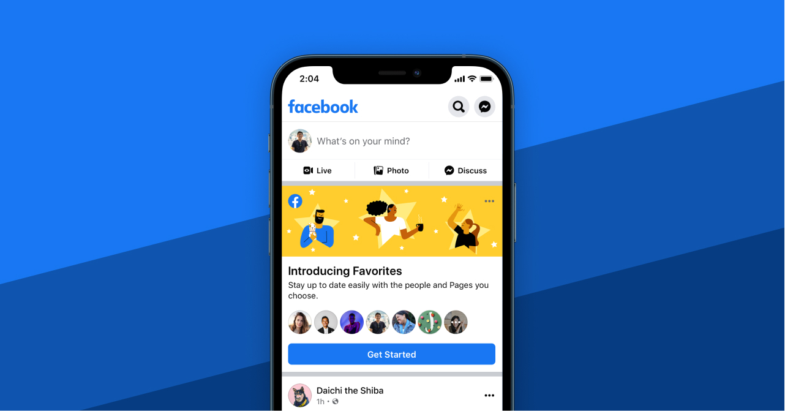

Eric Liang
Hello! I'm a product designer living in San Francisco. I currently lead design for controls and transparency on the Social Responsiblity team at Facebook. I'm also a design advisor at Replate, a NPO working to reduce hunger and food waste in the community.

Facebook Favorites
Helping people stay connected with the people and pages they care most about.

News Feed Transparency
Designing products to increase transparency and control in News Feed.
Like what you see? Feel free to reach out to me via email for more detailed case studies, or just to chat!